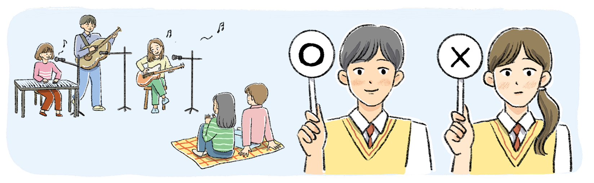

활동하기 도덕적 추론 적용하기
활동하기 다음 글을 읽고 짝과 함께 도덕적 문제 상황에 대한 두 학생의 도덕적 추론을 파악해 보자.
최근 학생회에서는 점심시간에 학교 앞 공원에서 길거리 공연 활동을 할것인지 말 것인지를 두고 논쟁이 벌어졌다. 민수는 친구들이 꿈과 끼를 펼칠 기회라며 찬성했지만, 가연이는 공부하는 친구들에게 방해가 될 수 있다며 반대했다.

● 다음 글을 읽고 짝과 함께 도덕적 문제 상황에 대한 두 학생의 도덕적 추론을 파악해 보자.
| 민수의 도덕 원리 |
|
|---|---|
| 민수의 사실 판단 |
|
| 민수의 도덕 판단 |
|
● 다음 글을 읽고 짝과 함께 도덕적 문제 상황에 대한 두 학생의 도덕적 추론을 파악해 보자.
| 가연이의 도덕 원리 |
|
|---|---|
| 가연이의 사실 판단 |
|
| 가연이의 도덕 판단 |
|